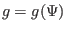
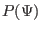
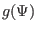
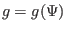
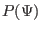
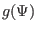

A general axisymmetric magnetic field, which is not necessarily an equilibrium
magnetic field, is given by Eq. (8), i.e.,
For the above axisymmetric magnetic field to be consistent with the force
balance equation (43), additional requirements for  and
are needed, i.e., is restricted by the GS equation and must be a
function of only . Thus, an axisymmetric equilibrium magnetic field is
determined by specifying two functions,
and
are needed, i.e., is restricted by the GS equation and must be a
function of only . Thus, an axisymmetric equilibrium magnetic field is
determined by specifying two functions,
 and
. The function is determined by solving the GS equation with
specified boundary condition. Note that the GS equation contains two free
functions,  and , both of which must be specified before
the GS equation can be solved. (The way to specify the function to
obtain desired global properties, such as total toroidal current and safety
factor, will be discussed later.) This feature makes the process of solving GS
equation different from solving usual partial differential equations where
only boundary conditions are needed to be specified. For most cases, the terms
on the right-hand side of the GS equation are nonlinear about and thus
the GS equation is a two-dimensional (about the cylindrical coordinates
and
. The function is determined by solving the GS equation with
specified boundary condition. Note that the GS equation contains two free
functions,  and , both of which must be specified before
the GS equation can be solved. (The way to specify the function to
obtain desired global properties, such as total toroidal current and safety
factor, will be discussed later.) This feature makes the process of solving GS
equation different from solving usual partial differential equations where
only boundary conditions are needed to be specified. For most cases, the terms
on the right-hand side of the GS equation are nonlinear about and thus
the GS equation is a two-dimensional (about the cylindrical coordinates  and
and  ) nonlinear partial differential equation for .
) nonlinear partial differential equation for .
Equation (54) indicates that the poloidal and toroidal equilibrium
magnetic field can be written as
and
respectively.
yj
2018-03-09